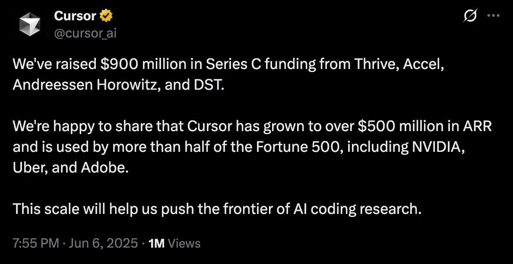

Cursor raised $900M at a $9.9B valuation
Originally posted on LinkedIn, June 7, 2025.
Cursor raised $900 million at a $9.9 billion valuation. The company and its software have become an industry standard, used by more than half of the Fortune 500, including NVIDIA, Uber, and Adobe.
They did it in just 3 years. The company was founded in 2022, and the product launched in March 2023. A week before the funding announcement, Cursor released version 1.0 after spending a year and a half on minor versions such as “0.50.”
Cursor also set a new world record after launch, reaching $100M in recurring revenue in only 14 months. That was faster than Wiz, which took 18 months to reach the same mark.
Microsoft and its open-source project VS Code had dominated this market. Cursor’s success is the clearest sign yet of how Generative AI is disrupting the software industry.
